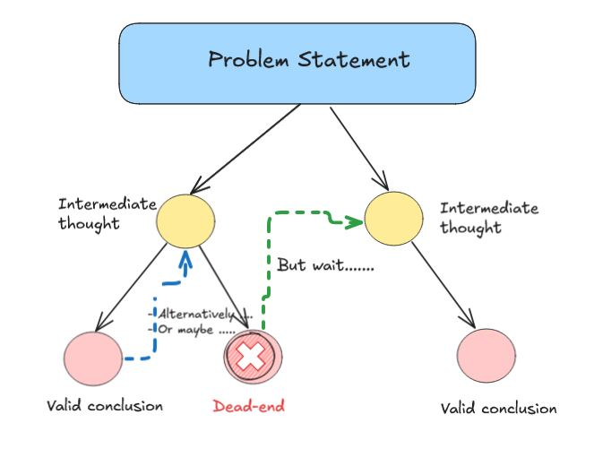

The funky post title is inspired by DeepSeek-R1’s response to one of our paradoxical situations where it used the apt phrase ‘Ethical Uncanny Valley’ in its response.
Paradoxical situations are some of the hardest reasoning tasks we can give to LLMs. Most of the existing benchmarks are based on math and programming problems. However, as these models are increasingly used in non-technical domains, it’s useful to see how well these models do in the context of open-ended, ambiguous scenarios inspired by classical paradoxes proposed in philosophical tradition. Operationalizing such evaluation is difficult for two reasons:
We want that we actually make the model reason/think on a novel problem, rather than making it easy to answer from its memory of training data (a perennial problem with eval). Since these paradoxes are well-documented in literature and the framing of situations encoding the paradox tends to be standard, this makes our task challenging.
Unlike math and coding problems, it’s not helpful for our task to look at the final answer and judge correctness. Instead, the evaluation here is more nuanced; we have to ascertain carefully whether the model captured the various dimensions of the situation and worked with multiple threads of possibilities before finally concluding that perhaps multiple conclusions may hold true simultaneously.
Data and Evaluation
In view of the above, we manually create a set of 12 problems involving situations that encode classical paradoxes, some of them being a combination of two paradoxes together (example). All of them are twists and riffs on standard formulations, thereby allowing us to ameliorate the effect of training data memory to the extent we can. We point out that these paradox prompts are different from dilemmas which require the model to select from two possible actions. In our case, the situations are fundamentally unresolvable though one can still make good statements about different possibilities.
We noticed ambiguities in our prompt formulations. For example, in problem 7 it’s not obvious whether the fact that the VR simulation was partly real is releaved at the end of each screening or at the very end when all screenings are done. We decided to retain such ambiguities and see how the models deal with it.
Some of the paradoxes we worked with are Liar’s, Russell’s, Barber’s, Newcomb’s and Knower’s paradoxes, and also some inspired by quantum mechanics.
We manually assign a score between 0-4 to model’s response with 0 being poor and 4 being excellent; see our evaluation criteria here. In addition, we give an explanation for the score and identify where the model did well or poorly in its thinking. As a result, our evaluation is of necessity subjective, and some of our observations below are opinionated.
Results
We compared the quality of outputs of a thinking model DeepSeek-R1 and a non-thinking model Claude-3.7-Sonnet (without extended thinking turned on). Across the board, we found DeepSeek-R1’s responses to be more detailed, nuanced, and overall better quality than Claude’s.
| Claude-3.7-Sonnet (no extended thinking) | DeepSeek-R1 | |
|---|---|---|
| Average score (over 12 prompts) | 2.63 | 3.42 |
Clearly, there’s a lot of benefit in having thinking ability for these kinds of problems.
Observations
Good
Even though DeepSeek-R1 acquired its thinking capability by RL on math and coding tasks, we were surprised how well it transposed this ability to the new domain of philosophical quandries.
We were struck by the richness of the language used by DeepSeek-R1. Even in the absence of a system prompt encouraging it to say things with good literary merit, it used words and phrases very well-suited to the philosophical discussions at hand (examples from problem 7 - moral labyrinth, scaffold for empathy, ethical uncanny valley, quantum state of being simultaneously fictional and real, testament to the irreducible complexity of human feeling.)
Equally impressive was DeepSeek-R1’s ability to make useful associations (Susan Feagin, Walter Benjamin, and Aristotle in problem 7) and often recognize the name of the paradox to which a given situation was related. We would like to point out that being able to recognize the name of the paradox isn’t sufficient for the model - it still has to apply the ideas in the context of the novel situation which may have more complexities (see Liar’s paradox with temporal twist).
DeepSeek-R1 backtracks often in the course of thinking and explores alternate pathways of thoughts (saying
Alternatively,Or maybe); this is very desirable. We observed that it would sometimes reach a dead-end when thinking, and would start afresh with another line of thought - this was often preceded byBut wait.

Not-so-good
The final answer given by DeepSeek-R1 was of much better quality and often contained novel points not brought up in the
<think>part. This suggests the final answer was not a mere summary of the text within<think>tags. Our hypothesis is that the primary benefit of the<think>part is to allow more computation before giving a final answer. The same may be better accomplished by<wait>tags without the model having to give verbose explanations.There was a lot of repetition and circularity in the thought process that went on within
<think>tags. On some harder problems (see here and here) the model could not give a final answer because it ran out of output token limit within<think>part. This lends support to the idea that thinking in words, though interpretable, is very inefficient.
Ideally, we want thinking to happen efficiently in some latent space, and then for us to derive a concise summary by probing the latent embeddings by specially-designed probes (small models).
- DeepSeek-R1 just took our prompt and ran off with it to think and give an answer. In the presence of ambiguities in the prompt, the model asked no clarifying questions. This resulted in a lot of speculative ruminations and circular thinking in the
<think>part.
Conclusion
It was impressive how DeepSeek-R1 operated in this new, open-ended domain. Its richness of language and ability to make associations were also remarkable.
On the other hand, we feel that what goes on in <think> part is not very efficient. It may be better to reason in a latent space, provided we are able to sumarize the thinking encoded in latent embeddings using specially-designed probes. Finally, thinking models may benefit from recognizing under-specifications and ambiguities in prompts; making an effort to get them clarified early may lead to more desirable outputs.
Yashika is an undergraduate student in Philosophy at Lady Shri Ram College, Delhi. Aman is an undergraduate student in Computer Science at Plaksha University, Mohali.